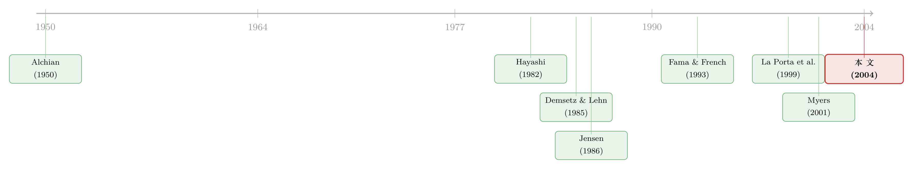

从「他们投了多少」反推「他们心里的折现率」——一把丈量代理问题的尺子
本文读的是 Chirinko & Schaller (2004, Journal of Financial Economics)：作者不去问高管「你心里的折现率是多少」，而是从企业真实的投资支出里把它「显示」出来。结果发现，最容易染上 Jensen 自由现金流病的那批公司——高自由现金流、差投资机会的「Jensen 公司」——它们的经理人用的折现率，比股东要求的市场利率低了 350–400 个基点；而股权集中能把这道楔子收窄。换算成实物，这些公司的资本存量比价值最大化下要多出 7%–22%。
1 一个老问题，一种新问法
公司治理的核心矛盾，几十年来其实就一句话：经理人花的是别人的钱。所有者要的是价值最大化，经理人却可能偏爱「建帝国」——把本该还给股东的现金，投到那些在股东眼里净现值为负的项目上去。Jensen (1986) 那篇经典把这件事讲得最透：当一家公司自由现金流 (free cash flow) 充裕、又恰好缺乏好的投资机会时，经理人最容易挥霍。
可问题来了：你怎么量它？
这正是这篇论文真正想解决的难题。过去研究治理，多半是看股价、看分红、看并购溢价，绕着「股东这一侧」打转。但 Stein (1996)、Dow & Gorton (1997) 早就提醒过：股东折现率有没有偏差，和经理人实际用什么折现率做投资决策，是两回事。而后者——经理人脑子里那把折现的尺子——才直接决定了投资支出，才是治理问题的真正落点。
它偏偏又是看不见的。没有哪份年报会写「本公司管理层对新项目要求的折现率为 X%」。
于是作者祭出了一个经济学里很优雅的老办法：显示偏好 (revealed preference)。你嘴上说什么不重要，你的行为会出卖你。一个人买了什么、投了什么，就「显示」了他真实的偏好和约束。把它搬到公司投资上：经理人投了多少资本，就显示了他心里真正在用的那个折现率。 投得越凶、对未来现金流贴现得越轻，说明他用的折现率越低。
这套「不问、只看行为」的思路，和近来一篇直接「问马嘴」的研究恰成对照——后者干脆挨家挨户去问 CFO 到底有没有看价格做决策（见《从马嘴里掏答案》）。显示偏好的好处是不依赖受访者说真话，代价是你得先有一个能把「行为」翻译成「折现率」的结构方程。
而这个「结构方程」，就是接下来全文的命脉。
2 从 NPV 法则，到欧拉方程
要把投资行为翻译成折现率，作者从资本预算里最朴素的那条规则出发：净现值 (net present value, NPV) 法则。一个项目值不值得投，看它带来的增量现金流的现值，够不够覆盖买入这单位资本的成本。
写成式子，企业应当持续购置资本，直到边际投资成本等于未来增量现金流的现值：
$$ MIC_t \;\ge\; \sum_{j=0}^{N} ICF_{t+j}\,R^{\,j}, \qquad R \equiv \frac{1}{1+r} $$
这里 \(MIC_t\) 是新增一单位资本的边际投资成本（购置价加边际调整成本），\(ICF_{t+j}\) 是这单位资本在当期及未来各期带来的增量现金流，\(R\) 是由真实风险调整折现率 \(r\) 定义的折现因子。最优时取等号。
接下来是这篇文章里我最欣赏的一步小魔术：怎样把这条「要把无穷个未来现金流加总」的法则，变成一条只含相邻两期、可以拿数据估计的方程？
首先，在最优路径上把 (1) 当等式看，并把 \(j=0\) 项单拎出来：
$$ MIC_t \;=\; ICF_t \;+\; \sum_{j=1}^{N} ICF_{t+j}\,R^{\,j} $$
接着，把同一条 NPV 法则写在 \(t+1\) 期，两边同乘 \(R\)、并重新整理求和下标：
$$ R\,MIC_{t+1} \;=\; R\sum_{j=0}^{N} ICF_{t+1+j}\,R^{\,j} \;=\; \sum_{j=1}^{N} ICF_{t+j}\,R^{\,j} $$
关键的一步在于：两式右边那一长串「未来现金流的现值」一模一样。用上式减去前式，所有 \(j\ge 1\) 的未来项全部消掉，只剩下：
$$ ICF_t \;-\; \bigl(MIC_t - R\,MIC_{t+1}\bigr) \;=\; 0 $$
这就是大名鼎鼎的欧拉投资方程 (Euler investment equation)。它的直觉极干净：假设公司此刻就在最优积累路径上，那它在「\(t\) 期多投一单位、\(t+1\) 期少投一单位」之间应当无差异。多投一单位的好处是当期现金流 \(ICF_t\)；代价是 \(t\) 期付出的边际投资成本 \(MIC_t\)，但能省下 \(t+1\) 期本要付的成本（这笔节省用一期折现因子 \(R\) 折回当下）。两相权衡，恰好相等。
魔术的妙处在于：那个曾经横亘在式子里、需要对全部未来做预期的无穷求和，被一阶差分干净地消去了。我们不再需要知道经理人对遥远未来的全部预期，只需要相邻两期的可观测量——而 \(R\) 里头，正藏着我们想要的折现率。
这条欧拉方程并不是作者拍脑袋写的近似，它等价于经济学文献里从标准跨期投资模型用变分法推出的那条欧拉方程（Chirinko, 1993）。换句话说，「NPV 法则」和「动态最优化」在这里殊途同归。
3 把治理问题塞进折现因子
有了欧拉方程这副骨架，真正点睛的一笔来了：怎么让折现因子 \(R\) 同时容纳风险、折旧，以及治理问题？
作者把折现因子拆成三块：股东的风险调整真实折现率 \(r^S_{i,t}\)、企业特有的几何折旧率 \(\delta_i\)，以及——这才是全文主角——经理人折现率与股东折现率之间的缺口。这道缺口用一个参数 \(f\) 表示。于是折现因子写成：
配套的定义是：
$$ f \equiv \bigl(r^E_{i,t} - r^S_{i,t}\bigr) $$
这个设定的聪明之处，全在那个指示变量 \(G_{i,t}\) 上。
它把识别变成了一道「分组对照」题。 作者不是去估一个对所有公司都一样的折现率，而是把样本按文献公认的「治理问题指标」切成互斥且穷尽的两组：会染病的一组（\(G=1\)）和不会的一组（\(G=0\)）。\(f\) 只对前一组估计。那个对所有公司都共同的 \(z\)，则替我们吸收掉「除治理之外、还会影响折现率的其它因素」。如此一来，两组投资行为的系统性差异，就被干净地归因到 \(f\) 上——这就是经理人和股东折现率的那道楔子。
注意 \(G_{i,t}\) 带着时间下标 \(t\)。一家公司今年自由现金流高、机会差，可能被划进 Jensen 组；明年情况变了，又划出去。分组是逐「公司—年」做的，不是一刀切贴标签。这一点对后面捕捉「同一家公司在不同时点、问题在自由现金流和融资约束之间切换」至关重要。
剩下的就是计量细节了：欧拉方程里既有当期、又有未来变量，可能与误差项相关，外加测量误差，所以必须用工具变量。作者选了广义矩估计 (Generalized Method of Moments, GMM)，工具主要是欧拉方程及辅助关系的滞后项，再加上常数、时间、时间平方这些「无可争议外生」的项。
4 为什么是加拿大？
数据是一个平衡面板：193 家加拿大公司，覆盖 1973–1986 年，因为方程里有 \(t+1\) 的变量、又要做各种构造，真正进入估计的是 1975–1985，共 2123 个公司—年观测。三大数据源 CANSIM、Laval、Financial Post，后两者大致相当于美国的 CRSP 和 COMPUSTAT。
但「为什么是加拿大」这个问题，本身就很有意思。
答案藏在 La Porta、Lopez-de-Silanes、Shleifer (1999) 那篇挑战 Berle-Means 范式的名作里。他们发现，「股权高度分散」其实是少数特例：英国 90%、美国 80% 的大公司是分散持股的，可放到全球样本里，这个比例平均只有 24%。美国和英国才是异类。
而加拿大恰好卡在一个绝佳的中间地带：大公司里约 50% 是分散持股，另一半则是集中持股、甚至盘根错节的企业集团。这意味着同一个制度环境里，既有「典型 Berle-Means 公司」，又有「大股东盯得很紧的公司」——天然就给了作者一个对照实验场，去看股权集中究竟能不能管住经理人的折现率。
（关于外资与集中持股能否真正改善治理这条线，本博客也评过一篇跨 30 国的长期证据，见《外资真是「蝗虫」吗？》。）
5 主要结果：那道 350–400 个基点的楔子
故事先从 Jensen 亲自点名的行业讲起。Jensen (1986) 说，1973 到 1980 年代中期的石油行业，是自由现金流问题的重灾区——钱多、好项目少。作者于是先拿石油公司（多伦多交易所 300 行业）当 \(G=1\) 组试水。
结果：石油行业经理人用的折现率，比股东折现率 \(r^S\) 低约 260 个基点（FF3 风险调整）或 280 个基点（CAPM 调整），在 10% 水平上显著。两种风险调整方法给出的估计从不相差超过一个标准误——这成了全文一以贯之的稳健特征，所以后面主要报 FF3 的结果。
但石油只是热身。真正的主菜是按「高自由现金流 ＋ 差投资机会」直接定义的「Jensen 公司」：自由现金流 \(FCF\) 处在行业前三分之二、且投资机会（用 Brainard-Tobin 的 \(Q\) 衡量）处在行业后三分之二的公司—年。对这组公司，经理人与股东的折现率缺口被进一步放大到——
350 到 400 个基点。
这是一个相当大的数。它意味着这些经理人在做投资决策时，对未来现金流的贴现「手太松」了整整三四个百分点。把它翻译回实物，作者算出这些 Jensen 公司的资本存量比价值最大化情形下高出约 7%–22%——这就是治理问题真金白银的代价：一批本不该上马的项目，变成了厂房和设备，沉淀在那里。
顺带，模型里那个捕捉规模报酬与市场竞争的参数 \(c\) 估得很精确，且总是小于 1。这件事并非边角料：作者在附录 A 的模型里证明，治理问题要能在均衡中存在，前提是企业赚着正的经济租金——只有手里有「余粮」，经理人才有本钱去「挥霍」。\(c<1\) 恰好印证了这种正租金的存在。换句话说，自由现金流问题和市场不完全竞争，是一根藤上的两个瓜。（这条「竞争—利润—折现率」的暗线，另有一篇专门讲，见《高贴现率，为什么会逼着对手「打价格战」？》。）
6 反转：什么能治这个病？
到这里，故事其实可以收尾了——「我们量出了 Jensen 病有多重」。但作者多走了一步，去问：有没有什么机制能把这道楔子收窄？
于是反转出现：他们发现，股权集中 (concentrated ownership) 与更高、因而更少扭曲的折现率相联系。对 Jensen 公司而言，当背后站着一个盯得紧的大股东时，经理人折现率会被「拉回」靠近股东要求的水平。这正好回应了第 4 节「为什么是加拿大」的伏笔：那个 50% 集中持股的中间地带，在这里兑现成了识别力——近距离监督确实在起作用。
更妙的是第 7 节那个「一鱼两吃」的延伸。Myers (2001) 在资本结构综述里说，至今没有一个统一理论能解释所有公司的资本结构，而自由现金流模型和优序融资 (pecking order) 模型是两大领头理论。那么——既然本文如此偏爱自由现金流模型，是不是就否定了优序融资？
作者的回答很克制也很诚实：不是非此即彼。 用同一套「折现率」框架去量两种扭曲，他们发现「对某些公司、在某些时点，自由现金流问题重要；而在另一些时点、甚至对同一家公司，优序融资问题重要」。同一把尺子，量出了两种病在不同情境下的此消彼长。这恰恰是把 \(G_{i,t}\) 做成逐公司—年分类换来的好处。
7 文献脉络
把这篇论文放回它的坐标系，会看到三股力量在这里交汇。
第一股是治理理论本身。 一端是「市场万能」的乐观派——Alchian (1950) 的演化论、Demsetz & Lehn (1985) 的内生股权结构——认为资本、产品、要素市场的竞争压力足以摆平代理问题，财务市场配置资源是有效的。另一端，是 Jensen (1986) 的自由现金流模型，把经理人与所有者的利益冲突摆到台面正中。本文做的，正是用数据在这两派之间裁判：它否定了完美市场模型，强力支持自由现金流模型。
第二股是投资计量的传统。 把投资写成欧拉方程、用 GMM 估计，这套手艺承自 Hayashi (1982) 对 Tobin's q 的新古典诠释、以及 Chirinko (1993) 对欧拉投资方程的系统梳理。本文的创新，是把「治理楔子」\(f\) 嵌进折现因子，让一条本来只谈投资的方程，开口讲起了治理。
第三股是比较公司治理的制度视角。 La Porta et al. (1999) 重画了全球股权结构的版图，让「加拿大作为实验室」这件事有了理论分量。而风险调整这一侧，则站在 Fama & French (1993) 三因子模型的肩上。

本文的位置，就在这三股力量的交点上：用投资计量的工具，去回答治理理论的争论，借一个制度上恰到好处的样本。
8 评论与延伸（Q&A + 研究方向）
(a) 几个可能的疑问
Q：「显示偏好」听起来很玄，它和直接做投资—现金流回归有什么本质区别？
区别在于「有没有一个结构」。传统的投资—现金流敏感性回归，看的是投资对现金流的相关，但这个相关到底是融资约束、还是过度投资、还是机会变量没控好，识别上一直含混。本文把行为塞进一条结构性的欧拉方程，让「投资行为」一一映射到一个有经济含义的参数 \(f=r^E-r^S\)。它报出的不是一个模糊的「敏感度」，而是一个能换算成基点、能换算成「资本多了百分之几」的折现率缺口。
Q：\(f\) 是负的（经理人折现率偏低），凭什么一定解读成「代理问题」，而不是经理人掌握了股东不知道的私有信息、看好真实前景？
这是最该警惕的替代解释。作者的防线是分组：\(f\) 只在「高自由现金流＋差机会」这种先验上最该出代理问题的组里才显著为负，且这道缺口会被股权集中收窄。如果是经理人信息优势驱动，没有理由它恰好集中在 Jensen 组、又恰好被监督削弱。分组对照＋监督的调节，是把「代理」从「信息」里摘出来的关键。
Q：350–400 个基点这个数，对风险调整方式敏感吗？万一 CAPM/FF3 把股东折现率 \(r^S\) 估偏了呢？
作者特意把 CAPM 和 FF3 两套都跑了一遍，结论是两者从不相差超过一个标准误，石油组里也只差 20 个基点。这说明结果不是被某一种风险模型的设定撑起来的。但要诚实：\(f\) 是 \(r^E\) 和 \(r^S\) 的差，如果两套风险模型同方向地系统性低估了 \(r^S\)，那这个差仍可能整体偏移——这是显示偏好法绕不开的结构依赖。
Q：为什么资本扭曲的区间这么宽，7% 到 22%？
因为它取决于把折现率缺口翻译成资本存量时所用的弹性假设（生产函数曲率、调整成本等）。区间宽，恰恰是作者没有把一个点估计伪装成精确真相的诚实做法——核心结论「资本明显偏多」在合理参数范围内都成立，但具体多几个百分点，要看你信哪一组结构参数。
Q：用 1970–80 年代的加拿大数据，结论还能外推到今天、外推到美国吗？
要分两层看。机制层面——「自由现金流→低折现率→过度投资，监督可缓解」——是相当一般的，没有理由只在加拿大成立。量级层面就未必：那个 50% 集中持股的制度特征是加拿大特有的实验便利，换到 80% 分散持股的美国，监督渠道的强弱、\(f\) 的大小都可能不同。把它当成「机制证据」比当成「数值标定」更稳妥。
Q：石油行业那个结果只在 10% 水平显著，是不是有点弱？
单看石油确实偏弱，样本里石油公司—年只有 286 个，功效有限。但作者的论证不靠石油单独站住，而是层层递进：石油（260–280 bp，10%）只是「按 Jensen 点名的行业」热身，真正的主力是按 FCF＋\(Q\) 直接定义的 Jensen 组（350–400 bp），两条独立的切法指向同一个方向，互为佐证。
(b) 几个可能的研究问题与提案
1. 把「显示偏好折现率」搬到公司债定价上
【经济故事】经理人折现率偏低意味着过度投资、资本沉淀过多，这对债权人是好是坏并不显然：一方面在建帝国、烧自由现金流，可能侵蚀偿债能力；另一方面更大的资产基础又可能是更厚的抵押垫。如果能把 \(f\) 估出来，就能直接检验「治理楔子」与信用利差、回收率的关系。 【可行性】中。需要把欧拉方程框架接到有债券价格的样本（如 TRACE＋Compustat），识别上可沿用本文的分组＋GMM。难点是债券样本的公司多为大型分散持股公司，\(f\) 的横截面变异可能不够。
2. 外资持有人是「监督者」还是「放任者」？
【经济故事】本文证明国内大股东的集中持股能收窄 \(f\)。一个自然的延伸：外国机构投资者进入后，是带来更强监督（压低 \(f\)），还是因信息劣势、距离过远而监督失灵？这直接对话外资治理效应那条争论。 【可行性】中高。需要带外资持股比例的国别面板（如 FactSet/Orbis 持股数据）＋本文的折现率框架。识别可借力指数纳入、可投资度改革之类的外生冲击。doable，但要小心外资持股本身的内生选择。
3. 货币政策如何通过「经理人折现率」传导？
【经济故事】传统传导讲的是股东侧的市场利率 \(r^S\) 随政策变动。但若经理人用的是一个被代理问题压低的 \(r^E\)，那么对高自由现金流公司，政策利率的变化可能被「治理楔子」钝化——加息对它们的投资抑制更弱。这能解释投资对货币政策反应的横截面异质性。 【可行性】中。本文框架已能分离 \(r^E\) 与 \(r^S\)，把政策利率冲击叠加上去即可。需要高频货币政策冲击序列＋公司投资面板。识别上要处理「治理分组」与「利率敏感行业」的混淆。
4. 用流动性差异检验「资本沉淀」的可逆性
【经济故事】Jensen 公司多投出来的 7%–22% 资本，是「沉没」的还是「可退出」的？如果资产专用性强、二级市场流动性差，过度投资的福利损失会更大，因为错配难以纠正。把资产流动性（如再配置市场厚度）与 \(f\) 交互，可以量出治理问题的不可逆成本。 【可行性】中低。资产流动性的度量本身就难，需借助同行业资产交易/拍卖数据。识别可行但数据门槛高，更适合在设备密集、有二手市场的行业（如航运、能源）做。
参考文献
- Alchian, A. (1950). Uncertainty, evolution, and economic theory. Journal of Political Economy 58, 211–221.
- Chirinko, R. S. (1993). Business fixed investment spending: modeling strategies, empirical results, and policy implications. Journal of Economic Literature 31, 1875–1911.
- Chirinko, R. S., & Schaller, H. (2004). A revealed preference approach to understanding corporate governance problems: Evidence from Canada. Journal of Financial Economics 74(2), 181–206.
- Demsetz, H., & Lehn, K. (1985). The structure of corporate ownership: causes and consequences. Journal of Political Economy 93, 1155–1177.
- Dow, J., & Gorton, G. (1997). Stock market efficiency and economic efficiency: is there a connection? Journal of Finance 52, 1087–1130.
- Fama, E., & French, K. R. (1993). Common risk factors in the returns on stocks and bonds. Journal of Financial Economics 33, 3–56.
- Hayashi, F. (1982). Tobin's marginal q and average q: a neoclassical interpretation. Econometrica 50, 213–224.
- Jensen, M. C. (1986). Agency costs of free cash flow, corporate finance, and takeovers. American Economic Review 76, 323–329.
- La Porta, R., Lopez-de-Silanes, F., & Shleifer, A. (1999). Corporate ownership around the world. Journal of Finance 54, 471–518.
- Myers, S. C. (2001). Capital structure. Journal of Economic Perspectives 15, 81–102.
- Stein, J. C. (1996). Rational capital budgeting in an irrational world. Journal of Business 69, 429–455.
我的判断是这样。贡献上，这篇论文最漂亮的地方不在结论本身（「自由现金流导致过度投资」并不新），而在它造出了一把可读数的尺子：把一个看不见的、心理层面的「经理人折现率」，通过欧拉方程＋分组对照，变成了能用基点报告、能换算成资本扭曲百分比的结构参数。这种「把行为翻译成参数」的手艺，比具体那几个数更有生命力。对识别的担忧有两点：一是 \(f\) 作为 \(r^E-r^S\) 之差，整体水平依赖于风险模型对 \(r^S\) 的标定，两套模型一致只能排除相对偏差、不能排除同向的系统偏移；二是「分组」虽然巧妙地把代理从信息里摘出来，但 \(G_{i,t}\) 的构造（FCF、\(Q\) 的行业三分位切法）多少带着研究者的自由度，换一种切法结果稳不稳，值得更系统地压力测试。后续想看到的，是把这套框架放到有债券价格、有外资持股、有货币政策冲击的现代样本里跑一遍——既检验机制的普适性，也看看那道 350–400 个基点的楔子，在今天的市场里是被竞争磨平了，还是依旧顽固地刻在厂房和设备上。